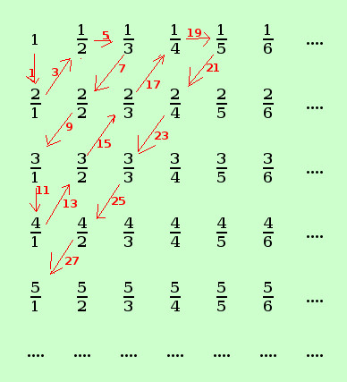

|
sviluppo dire se il seguente insieme in ℜ e' numerabile oppure no A = { x ∈ ℜ / x∈Q } E' un insieme infinito di ℜ per mostrare che e' numerabile dobbiamo porlo in corrispondenza biunivoca con l'insieme dei numeri naturali Sara' sufficiente mostrare che posso porre i razionali positivi in corrispondenza biunivoca con gli interi dispari ed i razionali negativi con gli interi pari per mostrare che l'insieme e' numerabile possiamo utilizzare il primo metodo di diagonalizzazione di Cantor mostriamo solamente la corrispondenza biunivoca fa interi dispari e razionali positivi Per poterlo fare devo cotruire una tabella ordinata che contenga tutti i numeri razionali; se poi riesco a collegare i numeri della tabella in modo ordinato allora avro' una corrispondenza biunivoca coi numeri interi intanto dovrei fare due tabelle: la prima per i razionali positivi, poi la seconda per i razionali negativi (questa la saltiamo) infine collego la prima tabella agli interi dispari e la seconda agli interi pari
 similmente avremo la corrispondenza biunivoca fra i naturali pari e l'insieme dei razionali negativi (basta mettere il - davanti ai numeri razionali nelle tabelle precedenti) Quindi i due insiemi possono essere posti in corrispondenza biunivoca con l'insieme N e l'insieme dei nuimeri razionali e' numerabile |